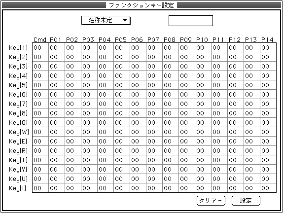

★SOUND Manual
★サウンドシュミレータマニュアル
★SOUND Manual
★サウンドシュミレータマニュアル
▲
戻る｜
進む▼
サウンドシュミレータマニュアル
ファンクションキー設定
- ここを選択すると、次のウィンドウが表示されます。
１〜８のテンキーとフルキーに[Q],[W],[E],[R],[T],[Y],[U],[I]のキーにサウンドドライバーの各機能を割り付けます。

- ポップアップメニュー(ここにファンクションキーポップのPICTを挿入してください)
- ファンクションキーテーブルの追加、変更を行います。
- エディットテキスト
- 一番上にあるエディットテキストはテーブル名の変更用です。
変更したいパラメータをクリックするとパラメータ変更用のエディットテキストが現れますのでそこでパラメータの変更を行ってください。
パラメータ変更用のエディットテキストはカーソルキーで移動が可能です。
- クリアー
- テーブルデータをすべて初期値に戻します。(0)
- 設定
- 使用中のテーブルとして現在のテーブルを設定しこのダイアログから抜けます。
▲
戻る｜
進む▼
★SOUND Manual
★サウンドシュミレータマニュアル
Copyright SEGA ENTERPRISES, LTD., 1997